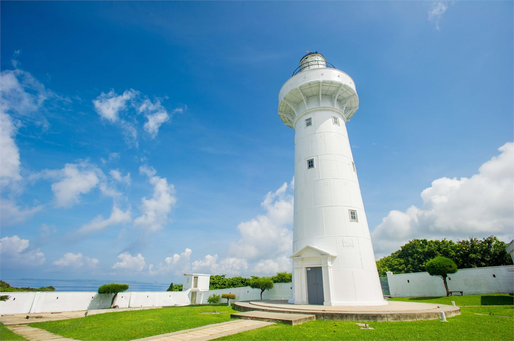
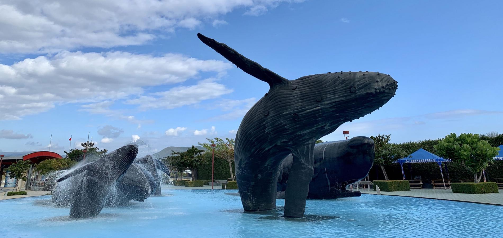
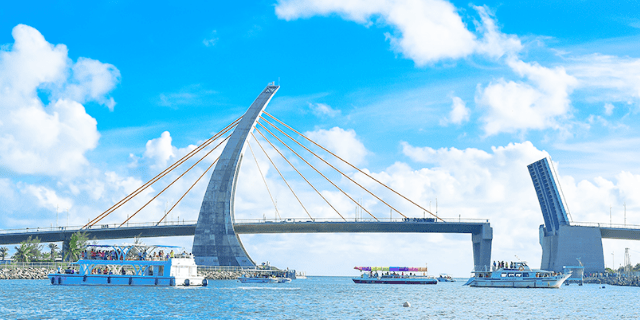
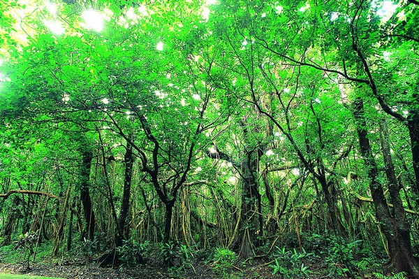
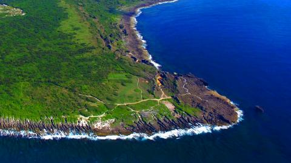

貓咪客棧
選單
訂房資訊
最新消息
客房介紹
地理位置
關於我們
地址：
947屏東縣滿州鄉舊公路
電話：
0933-653914
交通方式：
開車前往
搭987號公車666站下車
搭乘台灣高鐵至高鐵左營站
轉搭往墾丁客運快線車程 (約2.5小時)
高雄小港機場搭乘9117客運至墾丁牌樓站下車 告知民宿，會安排接駁車
 鵝鑾鼻燈塔
開車約20分鐘路程
 國立海洋生物博物館
開車約30分鐘路程
 大鵬灣
開車約120分鐘路程
墾丁大街
開車約30分鐘路程
 墾丁國家森林遊樂區
開車約30分鐘路程
 龍坑生態保護區
開車約20分鐘路程
信箱: narsos@gmail.com
匯款帳號: 0123456789567890
LINE: @qomr9843
地址: 947屏東縣滿州鄉舊公路
電話: 0933-653914
此網站為學習用網站